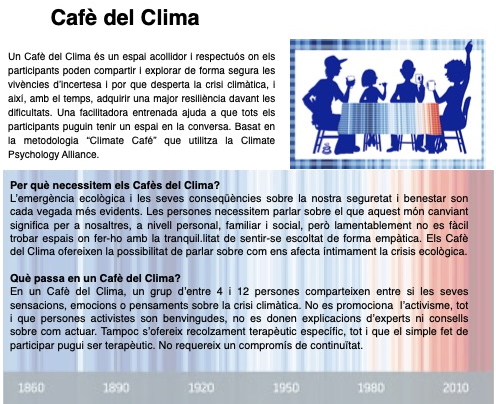
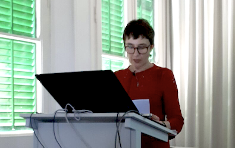

Col.legiada num 9196 | Acreditada per la FEAP i la EFPA | Membre titular de l'ACPP i l'AETG |

|
Espai de suport davant l’emergència climàtica
Espai per compartir les emocions que genera la problemàtica del canvi climàtic (eco-ansietat) per poder-les elaborar i generar consciència i acció transformadora.

Xerrades i tallers per a pares i educadors

Temes d'interès:
- Què és l'autoestima? I els vincles segurs?
- La necessitat de límits i com aplicar-los.
- La importància de la comunicació emocional entre pares/mares i fills/es.
- Entendre els adolescents per acompanyar-los millor.
- El cos i l'afecte al sí de la família: fomentar una sexualitat saludable.
- Transmetre bons hàbits i valors adequats als nostres fills i filles.
- Creixent entre pantalles: desenvolupament saludable a l'era d'internet.
- Mindfulness per millorar la salut i la convivència familiar.
Assessorament a cuidadors i professionals de l’ajuda
Espai de supervisió i suport a l’auto-cura.
Contactar:C/Casanova 46, 4rt 1a, Barcelona.
Mb: 696453277
Email: trescoca@gmail.com Contactar:
Molins de Rei.
Mb: 696453277
Email: trescoca@gmail.com